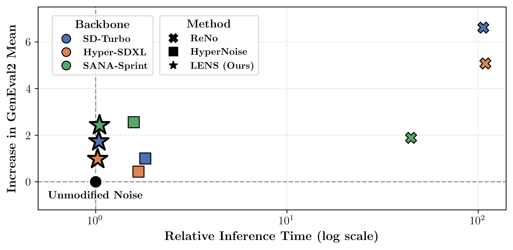
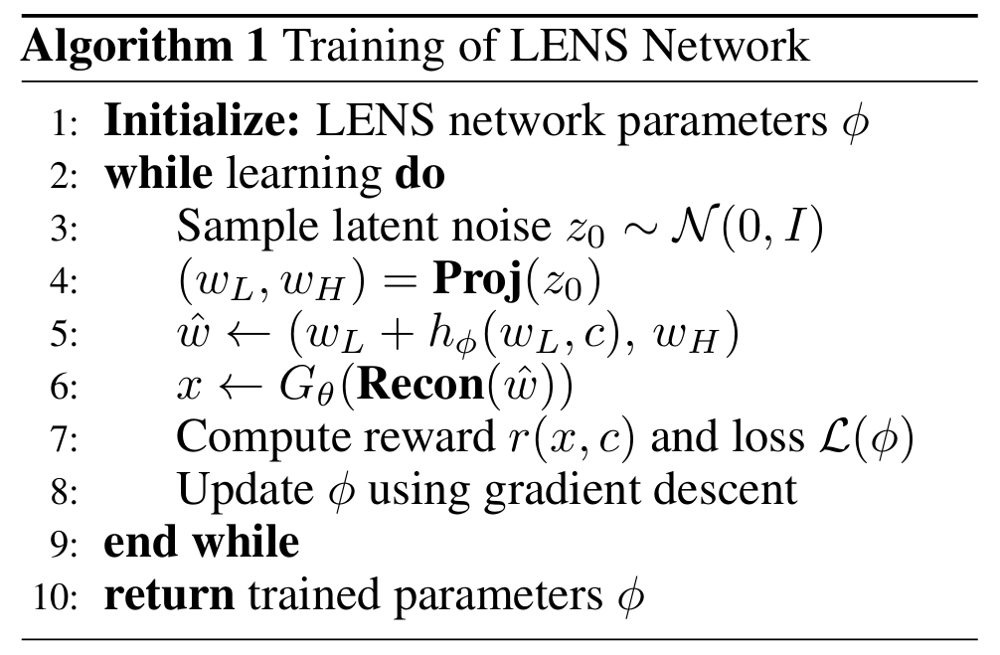
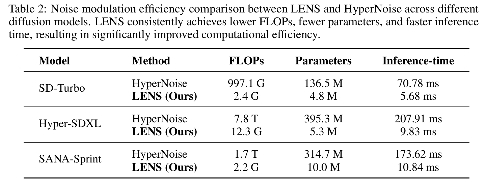
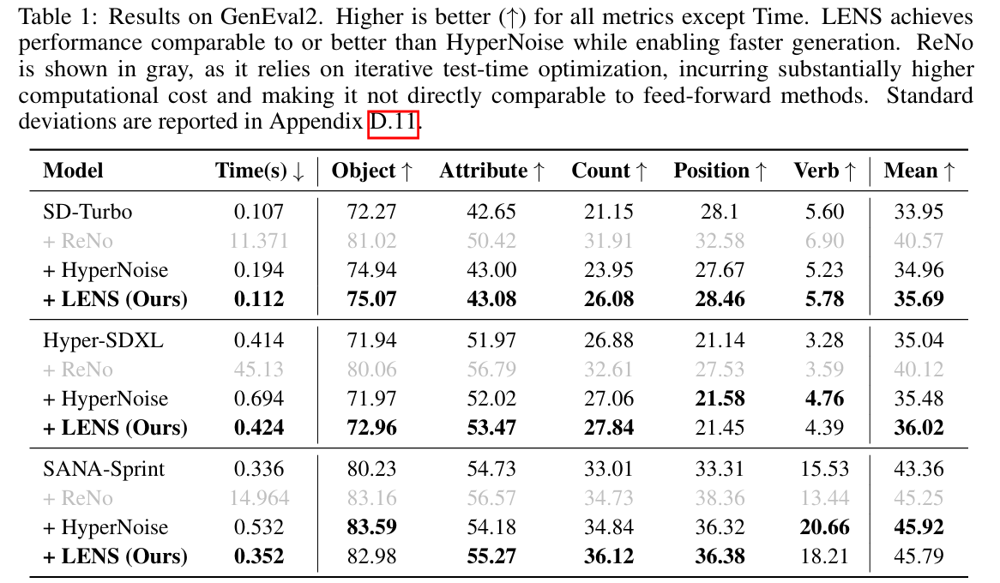
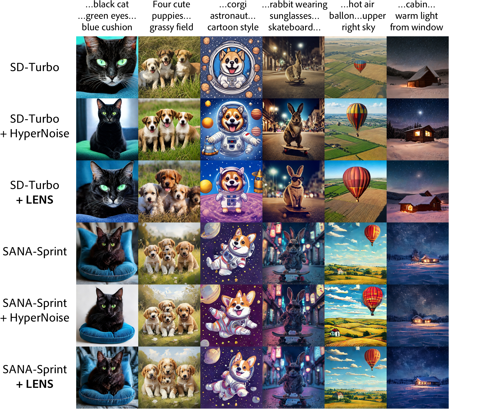

Distilled diffusion models accelerate image generation by reducing the number of denoising steps, but often suffer from degraded image quality. To mitigate this trade-off, test-time optimization methods improve quality, yet their iterative nature incurs substantial computational overhead and leads to slow inference, limiting practical usability. Recent hypernetwork-based approaches amortize this process during training, but still require costly noise modulation in high-dimensional latent spaces. In this work, we propose LENS (Low-frequency Eigen Noise Shaping), an efficient noise modulation framework that operates in a low-dimensional subspace. Our approach is motivated by the observation that low-frequency components of the noise largely determine the global structure and visual fidelity of generated images. Based on this observation, we provide a theoretical justification for restricting modulation to the low-frequency subspace and derive a principled training objective. Building on this, LENS employs a lightweight, standalone network to selectively modulate these components, enabling efficient and targeted noise modulation. Extensive experiments demonstrate that LENS achieves competitive image quality while reducing FLOPs by 400–700×, model parameters by 25–75×, and inference-time overhead by 10–20× compared to prior methods.

LENS achieves a favorable trade-off between generation quality and inference efficiency across three distilled diffusion models. By selectively modulating low-frequency noise components, LENS delivers comparable or improved image quality over HyperNoise with substantially lower inference overhead, while avoiding the costly iterative optimization required by ReNo.




@inproceedings{jeon2026lens,
title = {{LENS}: Low-Frequency Eigen Noise Shaping for Efficient Diffusion Sampling},
author = {Jeon, Haewon and Lee, Si-Hyeon},
booktitle = {Advances in Neural Information Processing Systems},
year = {2026}
}